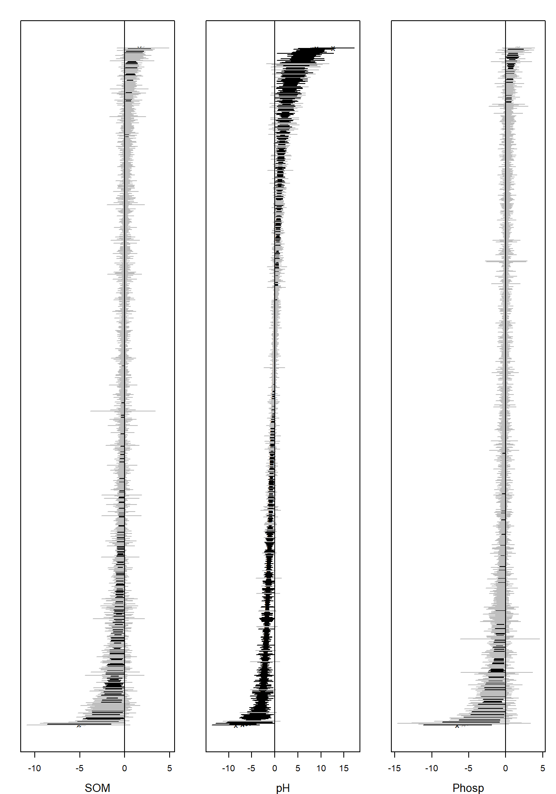

Analysing high-dimensional microbial community data using gllvm
Jenni Niku
2020-05-09
Source:vignettes/vignette2.rmd
vignette2.rmdIn this example we apply generalized linear latent variable model (GLLVMs) on the bacterial species data discussed in Nissinen, Mannisto, and van Elsas (2012). The sequence data is published in European Nucleotide Archive with the project number PRJEB17695. The subset of the data used in our analyses is included in the gllvm package. This example follows the one provided in Niku et al. (2017), except that here we use variational approximation method to fit GLLVMs instead of the Laplace approximation method. Altogether eight different sampling sites were selected from three locations. Three of the sites were in Kilpisjarvi, Finland, three in Ny-Alesund, Svalbard, Norway, and two in Mayrhofen, Austria. From each sampling site, several soil samples were taken and their bacterial species were recorded. The data consist of \(m = 985\) bacterial species counts measured from \(n = 56\) sites. The sites can be considered as independent from each other since bacterial communities are known to be very location specific. In addition to bacteria counts, three continuous environmental variables (pH, available phosphorous and soil organic matter) were measured from each soil sample. The data set is available in object Ysoil and the environmental variables and information regarding the sampling sites are given in object Xenv. In addition to environmental variables, Xenv contains information from the sampling location (Region), sampling site at each region (Site) and soil sample type (Soiltype, top soil (T) or bottom soil (B)). Using GLLVMs we try to find out if soils physico-chemical properties or region affect the structure of bacterial communities. The package and the dataset can be loaded along the following lines:
library(gllvm)## Loading required package: TMB## Loading required package: mvabund##
## Attaching package: 'gllvm'## The following objects are masked from 'package:stats':
##
## predict, simulate## [1] 56 985head(Xenv, 3)## SOM pH Phosp Region Site Soiltype
## AB2 0.01 6.70 2.63 Aus A B
## AB3 0.01 6.67 2.16 Aus A B
## AB4 0.00 8.19 0.62 Aus A BIn order to study if the effect of environmental variables is seen in an unconstrained ordination plot, we first consider a GLLVM with two latent variables and no predictors, and constructed an ordination plot based on the predicted latent variables. We consider two count distributions, the negative binomial (NB) distribution and the Poisson distribution. We also include random site effects to the model in order to account for the differences in site totals. This can be done simply by including row.eff = "random" to the function call.
ftNULL <- gllvm(Ysoil, family = "negative.binomial", row.eff = "random", num.lv = 2)
ftNULLpois <- gllvm(Ysoil, family = "poisson", row.eff = "random", num.lv = 2)Due to small sample size, the corrected Akaike information criterion, AICc, is used to select appropriate count distribution for responses. These values can be found for example from the print of the model objects.
ftNULL## Call:
## gllvm(y = Ysoil, num.lv = 2, family = "negative.binomial", row.eff = "random")
## family:
## [1] "negative.binomial"
## method:
## [1] "VA"
##
## log-likelihood: -59551.79
## Residual degrees of freedom: 51220
## AIC: 126983.6
## AICc: 118990
## BIC: 134963.5ftNULLpois## Call:
## gllvm(y = Ysoil, num.lv = 2, family = "poisson", row.eff = "random")
## family:
## [1] "poisson"
## method:
## [1] "VA"
##
## log-likelihood: -79542.62
## Residual degrees of freedom: 52205
## AIC: 164995.2
## AICc: 158971.1
## BIC: 170980.2The values for information criterias based on the Poisson and negative binomial models indicate that the NB model fits the data best. The residual diagnostic plots support the choice of the NB distribution. The residual plot for the Poisson model displays a fan-shaped pattern which indicates some unexplained overdispersion in the data. The Dunn-Smyth residuals given by the NB model are normally distributed around zero. Using argument n.plot we can choose a number of randomly selected species to be plotted in order to make any patterns in the residual plots more apparent. This can be useful argument when data is high-dimensional.

 The ordination of sites based on the negative binomial GLLVM can be plotted using function
The ordination of sites based on the negative binomial GLLVM can be plotted using function ordiplot. The sites can be coloured according to their environmental variable values, pH, SOM and phosp using an argument s.colors. In addition, the ordination points are labeled according to the sampling location (Kilpisjarvi, Ny-Alesund and Innsbruck). This can be done by setting symbols = TRUE and defining the symbols for each site using argument pch, see below:
# Define colors according to the values of pH, SOM and phosp
library(grDevices)
ph <- Xenv$pH
rbPal <- colorRampPalette(c('mediumspringgreen', 'blue'))
Colorsph <- rbPal(20)[as.numeric(cut(ph, breaks = 20))]
breaks <- seq(min(ph), max(ph), length.out = 30)
som <- Xenv$SOM
Colorssom <- rbPal(20)[as.numeric(cut(som, breaks = 20))]
breaks <- seq(min(som), max(som), length.out = 30)
phosp <- Xenv$Phosp
Colorsphosp <- rbPal(20)[as.numeric(cut(phosp, breaks = 20))]
breaks <- seq(min(phosp), max(phosp), length.out = 30)
# Define symbols for different sampling locations:
pchr = NULL
pchr[Xenv$Region == "Kil"] = 1
pchr[Xenv$Region == "NyA"] = 2
pchr[Xenv$Region == "Aus"] = 3
# Ordination plots. Dark color indicates high environmental covariate value.
ordiplot(ftNULL, main = "Ordination of sites, color: pH",
symbols = TRUE, pch = pchr, s.colors = Colorsph)
legend("topleft", legend = c("Kil", "NyA", "Mayr"), pch = c(1, 2, 3), bty = "n")
ordiplot(ftNULL, main = "Ordination of sites, color: SOM",
symbols = TRUE, pch = pchr, s.colors = Colorssom)
legend("topleft", legend = c("Kil", "NyA", "Mayr"), pch = c(1, 2, 3), bty = "n")
ordiplot(ftNULL, main = "Ordination of sites, color: phosphorous",
symbols = TRUE, pch = pchr, s.colors = Colorsphosp)
legend("topleft", legend = c("Kil", "NyA", "Mayr"), pch = c(1, 2, 3), bty = "n")
A clear gradient in the pH values of sites is observed, whereas there is less evidence of such pattern with the two other soil variables. It is also clear that the three sampling sites differ in terms of species composition. Standard deviation for the random site effects can be extracted by ftNULL$params$sigma. By plotting the predicted site effects, we can possibly see differences in sampling intensity.
plot(ftNULL$params$row.params, xlab = "site", col = Xenv$Region, pch = pchr,
main = "Site effects", ylab = "Site effect")
legend("topleft", legend = c("Kil", "NyA", "Mayr"), pch = c(1, 2, 3),
col = c(2, 3, 1), bty = "n")Next we produce a biplot based on GLLVM. Below, column indices of the 15 species with largest factor loadings are added in the (rotated) ordination plot. The biplot suggests a small set of indicator species which prefer sites with low pH values and a larger set of indicator species for high pH sites.
# Plot the species using column indices of the species:
rownames(ftNULL$params$theta) <- 1:ncol(Ysoil)
ordiplot(ftNULL, main = "Ordination of sites and species", xlim = c(-6, 5),
ylim = c(-4, 4), symbols = TRUE, pch = pchr, s.colors = Colorsph,
biplot = TRUE, ind.spp = 15, cex.spp = 0.9)
legend("topleft", legend = c("Kil", "NyA", "Mayr"), pch=c(1, 2, 3), bty = "n")
In order to study if pH value alone is capable of explaining the variation in species composition across sites, we included it as explanatory variable in the GLLVM. When the Poisson distribution performed so poorly on the null model, we consider only NB GLLVMs in the following examples.
# Scale environmental variables
Xsoils <- scale(Xenv[, 1:3])ftXph <- gllvm(Ysoil, Xsoils, formula = ~pH, family = "negative.binomial",
row.eff = "random", num.lv = 2)ftXph## Call:
## gllvm(y = Ysoil, X = Xsoils, formula = ~pH, num.lv = 2, family = "negative.binomial",
## row.eff = "random")
## family:
## [1] "negative.binomial"
## method:
## [1] "VA"
##
## log-likelihood: -58724.18
## Residual degrees of freedom: 50235
## AIC: 127298.4
## AICc: 117335.1
## BIC: 137273.2Ranked point estimates with 95% confidence intervals are plotted below using function coefplot and indicate that pH value strongly affects to the species composition as so many of the confidence intervals do not contain zero value (black). The species names are not informative in the coefficient plot when the number of species is so large and can be removed using an argument y.label.
coefplot(ftXph, cex.ylab = 0.5, y.label = FALSE)
The corresponding ordination plot given below indicates that the gradient in the pH values of the sites vanishes, but the ordination still exhibits a sampling location effect. In particular, several Kilpisjarvi sites seem to differ what comes to the bacterial species composition and all Mayrhofen sites are located at the left side of the ordination.
ordiplot(ftXph, main = "Ordination of sites",
symbols = TRUE, pch = pchr, s.colors = Colorsph)
legend("topleft", legend = c("Kil", "NyA", "Mayr"), pch = c(1, 2, 3), bty = "n")
Next we include all environmental variables as explanatory variables in the GLLVM.
ftX <- gllvm(Ysoil, Xsoils, family = "negative.binomial", row.eff = "random", num.lv = 2)ftX## Call:
## gllvm(y = Ysoil, X = Xsoils, num.lv = 2, family = "negative.binomial",
## row.eff = "random")
## family:
## [1] "negative.binomial"
## method:
## [1] "VA"
##
## log-likelihood: -56897.15
## Residual degrees of freedom: 48265
## AIC: 127584.3
## AICc: 113681.4
## BIC: 141549.1Based on th AICc values, this model is better than the previous model. However, point estimates with 95% confidence intervals below indicate that pH value is the main covariate affecting the species composition.

The corresponding ordination plot given below is very similar to the ordination plot of the model which includes only pH value as a covariate, and the ordination still exhibits a sampling location effect.
ordiplot(ftX, main = "Ordination of sites",
symbols = TRUE, pch = pchr, s.colors = Colorsph)
legend("topleft", legend = c("Kil", "NyA", "Mayr"), pch = c(1, 2, 3), bty = "n")
To account for this we add the sampling location as a categorical covariate into the model.
Xenv <- data.frame(Xsoils, Region = factor(Xenv$Region), Site = factor(Xenv$Site),
Soiltype = factor(Xenv$Soiltype))
ftXi <- gllvm(Ysoil, Xenv, formula = ~ SOM + pH + Phosp + Region,
family = "negative.binomial", row.eff = "random", num.lv = 2)ftXi## Call:
## gllvm(y = Ysoil, X = Xenv, formula = ~SOM + pH + Phosp + Region,
## num.lv = 2, family = "negative.binomial", row.eff = "random")
## family:
## [1] "negative.binomial"
## method:
## [1] "VA"
##
## log-likelihood: -54645.47
## Residual degrees of freedom: 46295
## AIC: 127020.9
## AICc: 109178.2
## BIC: 144975.7The resulting ordination plot shows that there is no more visible pattern in sampling location.
ordiplot(ftXi, main = "Ordination of sites",
symbols = TRUE, pch = pchr, s.colors = Colorsph)
legend("topleft", legend = c("Kil", "NyA", "Mayr"), pch = c(1, 2, 3), bty = "n")
When comparing nested models, in particular, the model with environmental covariates to the null model, and the model with all covariates to the model with environmental covariates, the deviances are 5309 and 4503, respectively, suggesting that about 15% of the total covariation is due to environmental covariates based on the marginal likelihood.
# Deviances
(dev1 <- (ftX$logL - ftNULL$logL) * 2)## [1] 5309.274(dev2 <- (ftXi$logL - ftX$logL) * 2)## [1] 4503.3561 - dev2/dev1## [1] 0.1517944Notice that changes in log-likelihood are not the only approach to quantifying variance explained, and other methods like extensions of pseudo R2 are possible. For example, below we compare the total covariation in the ftNULL and ftX based on the traces of the residual covariance matrices. This suggests that environmental variables explain 38% of the total covariation.
1 - getResidualCov(ftX)$trace/getResidualCov(ftNULL)$trace## [1] 0.379193References
Niku, J., D.I. Warton, F.K.C. Hui, and S. Taskinen. 2017. “Generalized Linear Latent Variable Models for Multivariate Count and Biomass Data in Ecology.” 22. Journal of Agricultural, Biological, and Environmental Statistics: 498–522.
Nissinen, R., M. Mannisto, and J van Elsas. 2012. “Endophytic Bacterial Communities in Three Arctic Plants from Low Arctic Fell Tundra Are Cold-Adapted and Host-Plant Specific.” 82. FEMS Microbiology Ecology: 510–22.